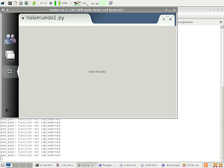

Creando el primer programa para Maemo-sdk
Posted on dom 23 marzo 2008 in Debian, maemo, Nokia N810, Python • 1 min read
Continuando con los post sobre el Nokia N810, ahora a explicar el proceso de instalación del kit de desarrollo en Debian. Me basé en una guía donde explican la instalación del ambiente de desarrollo para el OS2008 en Ubuntu.
Ahora que ya se tiene el ambiente de desarrollo de maemo instalado probare un script básico hola mundo con gtk.
Es necesario agregar un repositorio al ambiente de maemo:
/scratchbost/login
nano /etc/apt/sources.list
deb http://repository.maemo.org/extras chinook free non-free
Luego ejecutar apt-get update e instalar todos los paquetes de python2.5 en especial a python2.5-runtime.
Con esto ya se tiene todo lo necesario para el primer programa en python sobre maemo.
El script lo llamaremos holamundo1.py con el siguiente contenido:
#!/usr/bin/env python2.5
import gtk
window = gtk.Window(gtk.WINDOW_TOPLEVEL)
label = gtk.Label("Hello World!")
window.add(label)
label.show()
window.show()
gtk.main()
